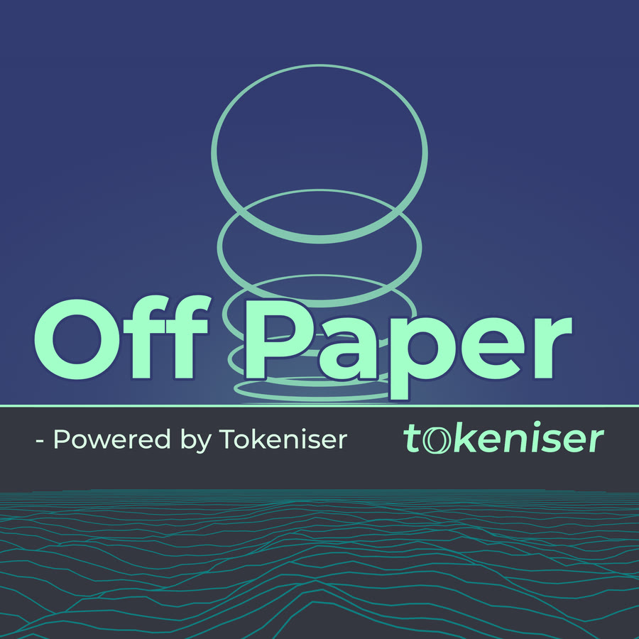
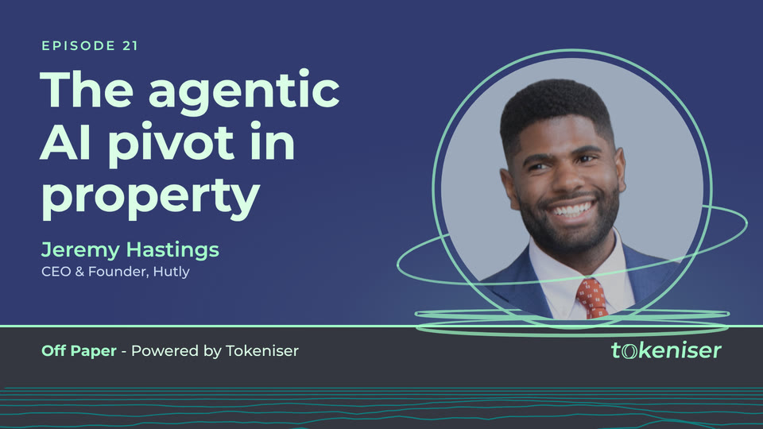
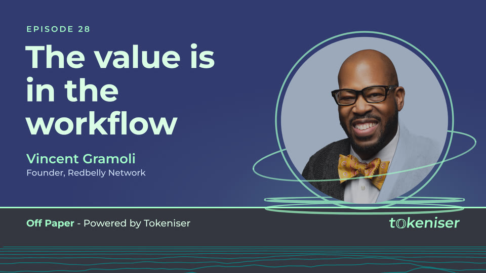
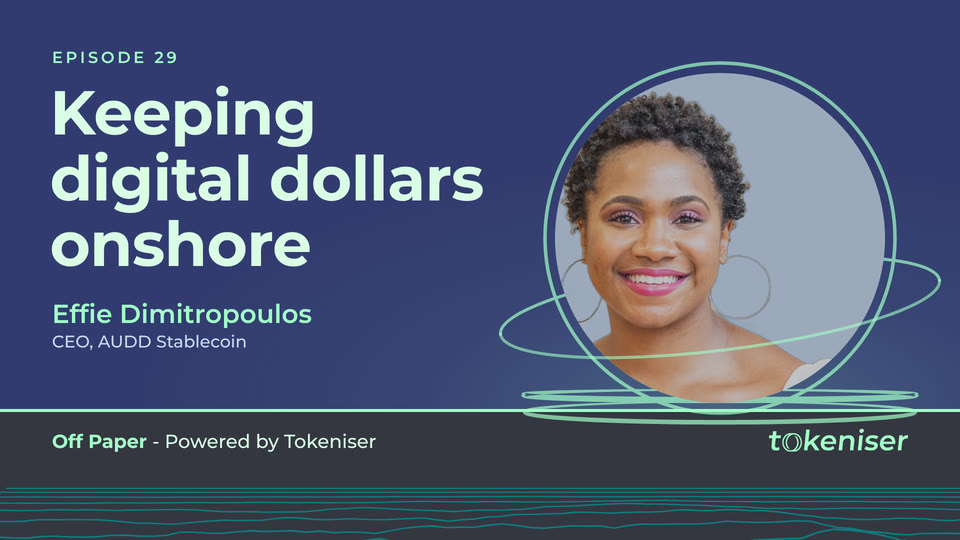

Redbelly Insights, relaunched
Real ground, lifted on chain.
A single look for the show, made from nothing but the seven Tokeniser colours, Montserrat and the Tokeniser logo files from the brief. Each piece is built on one horizon line: under it lies the real world, rings rising off it are the tokens, and rails running in to it are the chain.
The cover, the thumbnails and the opening all read their name, colours and shapes from src/brand.js, so a change made there shows up everywhere at once.

src/ (every visual) and tools/ (renderers, score, checks).
6Licence proofMontserrat OFL, original score, and dated proof for each CC0 stand-in photo.
Part C: opening sequence
Ground, lift, run, mark. Sixteen seconds, no words.
- 1920 x 1080 and 1080 x 1920
- 60 fps, H.264 High, BT.709
- AAC 48 kHz stereo
- -16 LUFS integrated
- Ends on solid Slate
- Each format laid out for itself, not cropped
| Time | Picture | Sound |
|---|---|---|
| 0.0 to 3.6 s | Dawn opens along the horizon; light reaches across a ridgeline landscape, a sweep passes over the hills. | A pure high tone and a breath of air; the sweep crosses the stereo field with the light. Gm9 pad. |
| 3.6 to 7.5 s | The contours of the central hill lift off one by one, become perfect rings and turn towards the camera. The land flattens into rails. | One bell per ring, rising through E flat lydian. The pulse starts at 6 s. |
| 7.5 to 9.0 s | The rings take their places along the rail, facing the camera; more condense out of the distance. | Bb/D to Cm9; ticks and plucks join. |
| 9.0 to 11.8 s | The camera runs the rail through the rings; light pulses race along the rails. | A whoosh as each ring passes, timed from the camera path; a riser. |
| 11.8 to 12.0 s | The last ring turns edge-on and becomes a line. | 60 ms of true silence. |
| 12.0 to 15.0 s | The line becomes the horizon; "Off Paper" rises out of it, "- Powered by Tokeniser" and the logo appear beneath; rings lift off the line as on the cover. | Impact and resolve to B flat major (Bbmaj9); a glass tap for the name, the sub line and the logo. |
| 15.0 to 16.0 s | Fade to solid Slate, held for a straight cut into the episode. | Fade to digital silence at 15.75 s. |

Part B: cover art
The name stands on the horizon; six tokens lift off it.
The lowest ring lies flat on the line, like land; each one above has turned a little further, until the top one faces you. The horizon is also the rule of the name lockup, and the ground lines below flatten into rails as they reach it.


Part B: thumbnail template
Four slots, everything else locked.
A producer fills in the episode, the title, the guest and a photo; a role line is optional. Titles scale down to fit within three lines and never goes below 96 px on the 1920 canvas, which is 18 px on a 360 px phone thumbnail. Guests sit in the coin with the 30 percent Slate overlay; devices sit at 70 percent on colour and 60 percent on the photo.



The photos are CC0 stock portraits standing in for each guest's approved headshot; they are not photos of the named guests. Sources and dated licence proof are in LICENCES.md.

Part A: visual identity
Tokeniser colours, Montserrat and the supplied logo, nothing else.


Licences and checks
Every asset is made for the show, supplied by the brief, or CC0.
| Asset | Source | Licence |
|---|---|---|
| Montserrat | Google Fonts, as linked in the brief | SIL Open Font License 1.1 (commercial use allowed). Copy included. |
| Tokeniser logos | The three files linked in the brief | Client brand assets, used unaltered (SHA-256 checked). |
| Music and sound | Synthesised in tools/score.py | Original work: no samples, loops, libraries, AI music or voice. |
| Stand-in guest photos | nappy.co, three photos (page links in LICENCES.md) | CC0 1.0, commercial use allowed, no attribution needed. Dated screenshots of each photo page and the licence page included. |
| Graphics, cover, thumbnails, animation | Generated from src/ | Original work. |
Specs, palette, fonts, logo integrity, the show name, licences, legibility on a phone, motion smoothness and the template itself are all tested. Full report: VERIFICATION.md.